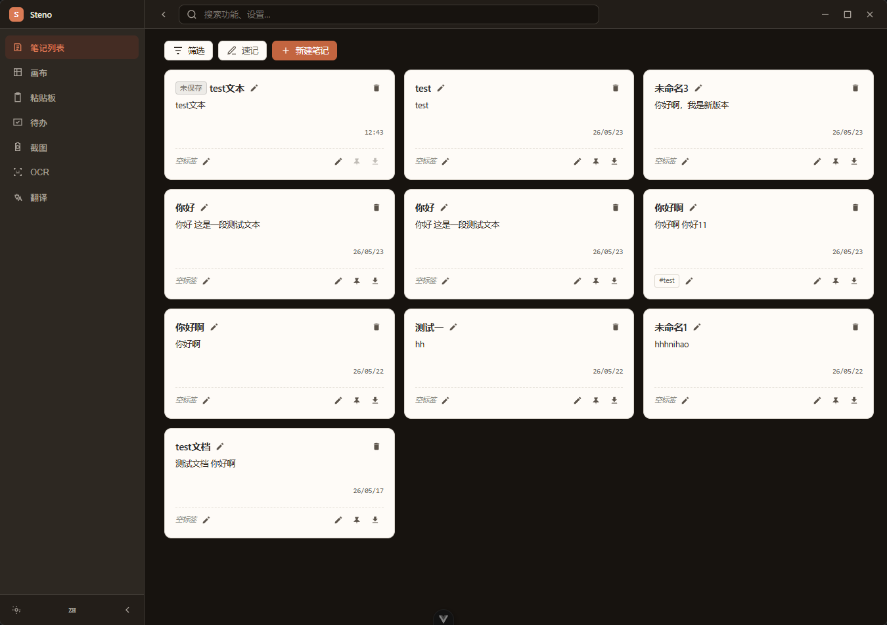
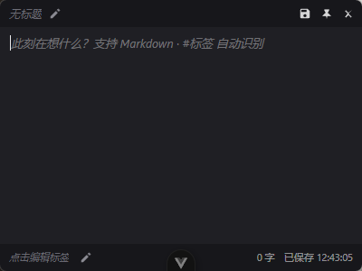
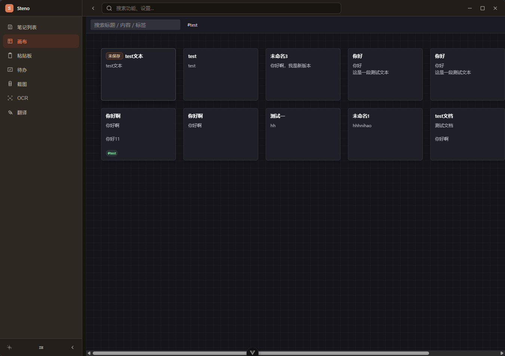
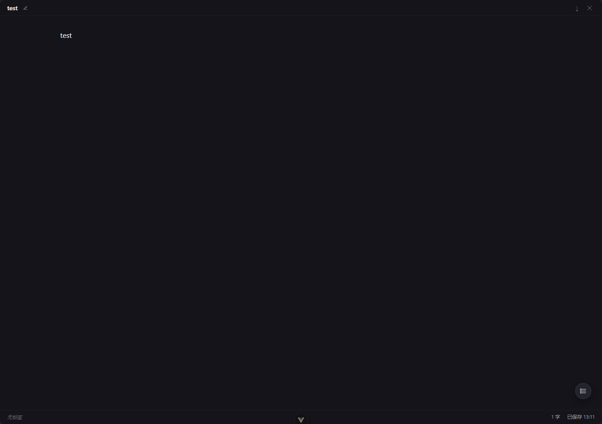
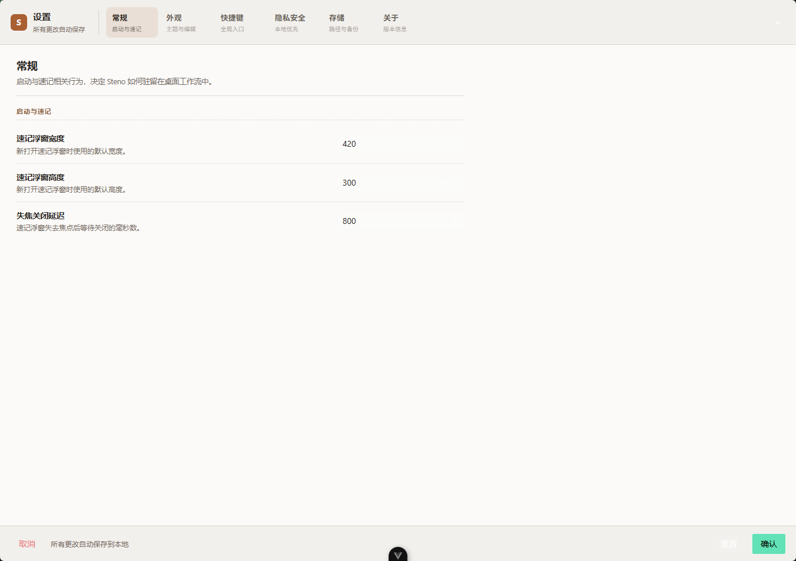

速记浮窗
从任何应用呼出，输入停顿后自动保存。草稿会回到主窗口，之后可以继续编辑、置顶或归档。

Steno 不要求你先选文件夹、打开编辑器、整理标题。它先让内容安全落地，再把整理工作交给主窗口、画布和 Zen 模式。
从任何应用呼出，输入停顿后自动保存。草稿会回到主窗口，之后可以继续编辑、置顶或归档。
ProseMirror 内核保留 Markdown 源码语义，支持代码、公式、图表、图片和大纲跳转。
把笔记变成可拖拽卡片，通过空间位置建立上下文，适合会议、项目和灵感整理。
今日待办浮窗、提醒、统计、粘贴板历史和图片编辑补齐桌面工作流中的轻任务。
速记浮窗覆盖在当前应用上方，输入内容会自动保存为本地草稿，之后可以继续编辑或转成置顶便签。

无限画布支持平移、缩放和卡片拖拽。双击卡片可以进入 Zen 写作，快速从结构整理切换到长文编辑。


Zen 模式保留标题、字数、保存状态和大纲，让短笔记可以自然扩展成完整文档。
主题、语言、快捷键、提醒、保留天数和数据路径集中在设置面板中管理，所有路径都可以直接查看。

Steno 的前端负责交互密度和写作体验，Rust 后端负责窗口、快捷键、托盘、SQLite、文件系统和系统能力。
Steno 适合需要频繁切换上下文的人：开发者、写作者、研究者、会议记录者，以及所有希望把桌面零散输入沉淀为 Markdown 的用户。